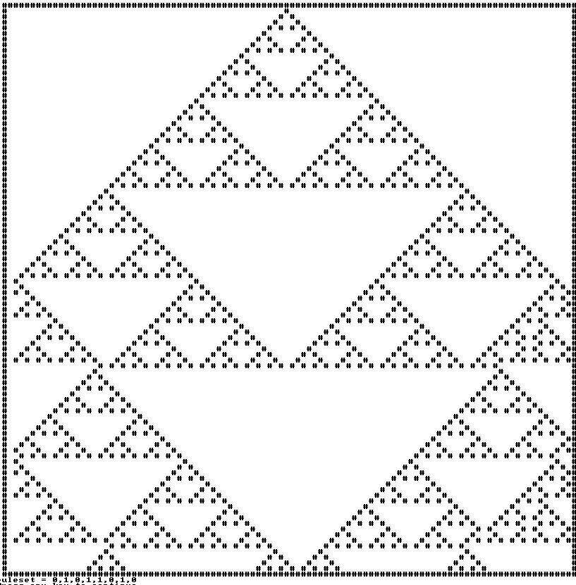

I have made a somewhat of a proof of concept for cellular automata
My only problem is that it's pretty slow :/
If anyone is familiar, how could we speed this up?
Code: Select all
@echo off & setlocal enableDelayedExpansion & color f0
call:canvas 40 40
call:rulesets
rem Try a random ruleset
REM for /l %%r in (0,1,7) do set /a "rrs=!random! %% 2" & set "ruleset=!ruleset!!rrs!,"
rem create array ruleset[]
set "arr=-1" & for %%a in (%ruleset%) do ( set /a "arr+=1" & set "ruleset[!arr!]=%%a" )
rem create 2d array for our grid m[][]
for /l %%i in (0,1,%width%) do for /l %%j in (0,1,%height%) do set "m[%%i][%%j]=0"
rem place our "arbitrary" character, Line 0, "center pixel"
set /a "wd2=width/2"
set "m[!wd2!][0]=1"
rem ----------------------------------------------------------------------------------------------
rem %%j = %%jenerations.... lol
for /l %%j in (0,1,%height%) do (
rem loop through the width of the screen (each "pixel") on each line.
for /l %%i in (0,1,%width%) do (
rem if our m[%%i][%%j] grid is a 1, plot a "#"
if !m[%%i][%%j]! equ 1 call :plot %%i %%j #
rem Pixel left of me
set /a "_l=%%i - 1"
call set "l=%%m[!_l!][%%j]%%"
rem Pixel right of me
set /a "_r=%%i + 1"
call set "r=%%m[!_r!][%%j]%%"
rem _g = generation (%%j) + 1
set /a "_g=%%j + 1"
if !l! equ 1 if !m[%%i][%%j]! equ 1 if !r! equ 1 set "m[%%i][!_g!]=%ruleset[0]%"
if !l! equ 1 if !m[%%i][%%j]! equ 1 if !r! equ 0 set "m[%%i][!_g!]=%ruleset[1]%"
if !l! equ 1 if !m[%%i][%%j]! equ 0 if !r! equ 1 set "m[%%i][!_g!]=%ruleset[2]%"
if !l! equ 1 if !m[%%i][%%j]! equ 0 if !r! equ 0 set "m[%%i][!_g!]=%ruleset[3]%"
if !l! equ 0 if !m[%%i][%%j]! equ 1 if !r! equ 1 set "m[%%i][!_g!]=%ruleset[4]%"
if !l! equ 0 if !m[%%i][%%j]! equ 1 if !r! equ 0 set "m[%%i][!_g!]=%ruleset[5]%"
if !l! equ 0 if !m[%%i][%%j]! equ 0 if !r! equ 1 set "m[%%i][!_g!]=%ruleset[6]%"
if !l! equ 0 if !m[%%i][%%j]! equ 0 if !r! equ 0 set "m[%%i][!_g!]=%ruleset[7]%"
)
call :showCanvas
echo ruleset = !ruleset!
)
rem ----------------------------------------------------------------------------------------------!
pause & exit
:rulesets
REM set "ruleset=0,0,0,0,0,0,0,1" & rem Rule 1
REM set "ruleset=0,0,0,1,1,1,1,0" & rem Rule 30
REM set "ruleset=0,0,1,1,0,1,1,0" & rem Rule 54
REM set "ruleset=0,0,1,1,1,1,0,0" & rem Rule 60
REM set "ruleset=0,0,1,1,1,1,1,0" & rem Rule 62
set "ruleset=0,1,0,1,1,0,1,0" & rem Rule 90
REM set "ruleset=0,1,0,1,1,1,1,0" & rem Rule 94
REM set "ruleset=0,1,1,0,0,1,1,0" & rem Rule 102
REM set "ruleset=0,1,1,0,1,1,1,0" & rem Rule 110
REM set "ruleset=0,1,1,1,1,0,1,0" & rem Rule 122
REM set "ruleset=0,1,1,1,1,1,1,0" & rem Rule 126
REM set "ruleset=1,0,0,1,0,1,1,0" & rem Rule 150
REM set "ruleset=1,0,0,1,1,1,1,0" & rem Rule 158
REM set "ruleset=1,0,1,1,0,1,1,0" & rem Rule 182
REM set "ruleset=1,0,1,1,1,1,1,0" & rem Rule 188
REM set "ruleset=1,0,1,1,1,1,1,0" & rem Rule 190
REM set "ruleset=1,1,0,1,1,1,0,0" & rem Rule 220
REM set "ruleset=1,1,0,1,1,1,1,0" & rem Rule 222
REM set "ruleset=1,1,1,1,1,0,1,0" & rem Rule 250
REM set "ruleset=1,1,1,1,1,1,1,1" & rem Rule 256
REM set "ruleset=1,1,0,1,0,0,1,1" & rem Unknown Rule
REM set "ruleset=1,0,1,1,1,0,0,1" & rem Unknown Rule
REM set "ruleset=1,0,0,1,0,0,1,1" & rem Unknown Rule
REM set "ruleset=0,1,0,1,1,0,1,0" & rem Unknown Rule
REM set "ruleset=1,0,0,1,0,0,0,1" & rem Unknown Rule
REM set "ruleset=0,1,0,0,1,1,0,1" & rem Unknown Rule
REM set "ruleset=0,1,0,0,0,1,0,1" & rem Unknown Rule
REM set "ruleset=1,0,1,1,0,1,1,1" & rem Unknown Rule
REM set "ruleset=" & rem Unknown Rule
goto :eof
:canvas
set /a "width=%~1 - 1", "height=%~2 - 1", "conWidth=width + 5", "conHeight=height + 6", "_=0"
for /l %%a in (-2,1,%width%) do set "outerBuffer=!outerBuffer!#"
for /l %%a in (0,1,%width%) do set "widthBuffer=!widthBuffer! "
call :updateCanvas
call :cursorpos
if exist "%temp%\cursorpos.exe" ( set "cls="%temp%\cursorpos.exe" 0 1" ) else ( set "cls=cls" )
mode con: cols=%conWidth% lines=%conHeight%
goto :eof
:updateCanvas
for /l %%a in (0,1,%height%) do set "_[%%a]=%widthBuffer%"
goto :eof
:showCanvas
%cls%
echo= %outerBuffer%
for /l %%a in (0,1,%height%) do echo= #!_[%%a]!#
echo= %outerBuffer%
if "%~1" equ "/u" for /l %%a in (0,1,%height%) do set "_[%%a]=%widthBuffer%"
goto :eof
goto :eof
:plot x y
setlocal
set "c=%~3"
set /a "_y=%~2", "_x=%~1", "_x2=%~1 + 1"
(endlocal
set "_[%_y%]=!_[%_y%]:~0,%_x%!%c:~0,1%!_[%_y%]:~%_x2%!"
)
goto :eof